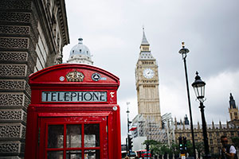
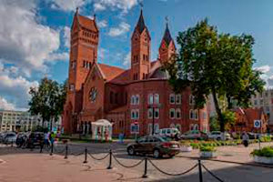
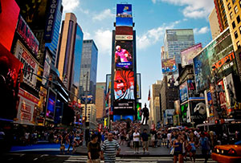
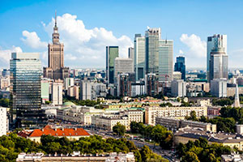

|  | London is the capital and largest city of England and the United Kingdom. It stands on the River Thames. London now has a population of about 9 million (2020). It is the third most populous city in Europe and accounts for 13.4% of the UK population. London is one of the largest financial centres in the world. In 2012, London became the first city to host the modern Olympics three times. London is one of the leading tourist destinations in the world. Tourism is one of London's prime industries. |
|  |
Minsk is one of the oldest cities in Europe. The first written mention of the future capital of the Republic of Belarus dates back to 1067.
|
|  |
New York, often called New York City to distinguish it from New York State,
or NYC for short, is the most populous city in the United States. New York now has a population of about 8.4 million (2018).
|
|  |
Warsaw is the capital of Poland and the largest city in the country with a difficult history and destiny. It is an interesting combination of antiquity and traditions, the modern rhythm of life and the energy of a large metropolis. Warsaw is located in the central part of Poland and has a dramatic history. Since the 16th century, when the city was chosen as the capital of the Polish state, it has been destroyed several times in the crucible of numerous wars. The last of them, World War II, completely destroyed its heart - the Old City. But Warsaw, like a phoenix, has risen from the ashes, albeit having lost, despite all efforts, part of its original historical appearance. |